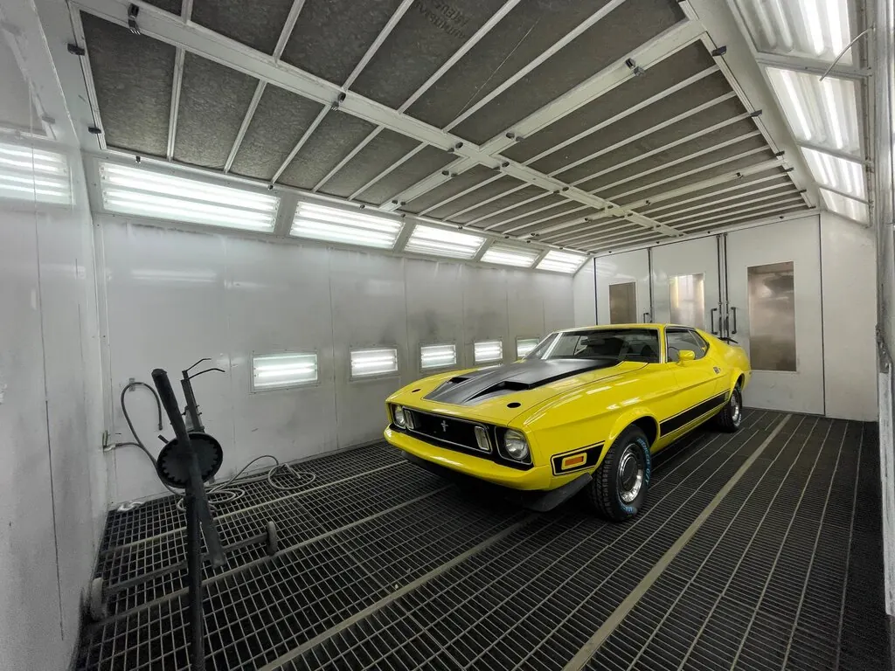
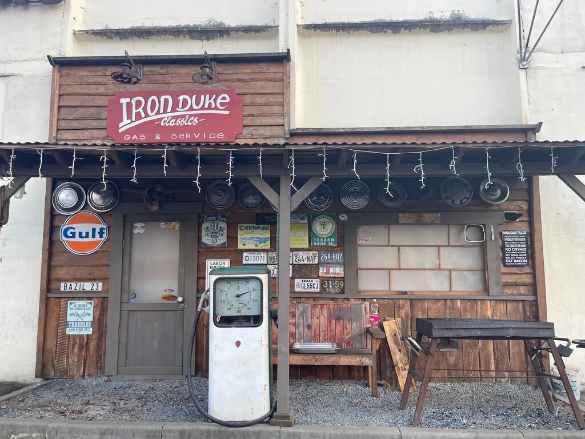
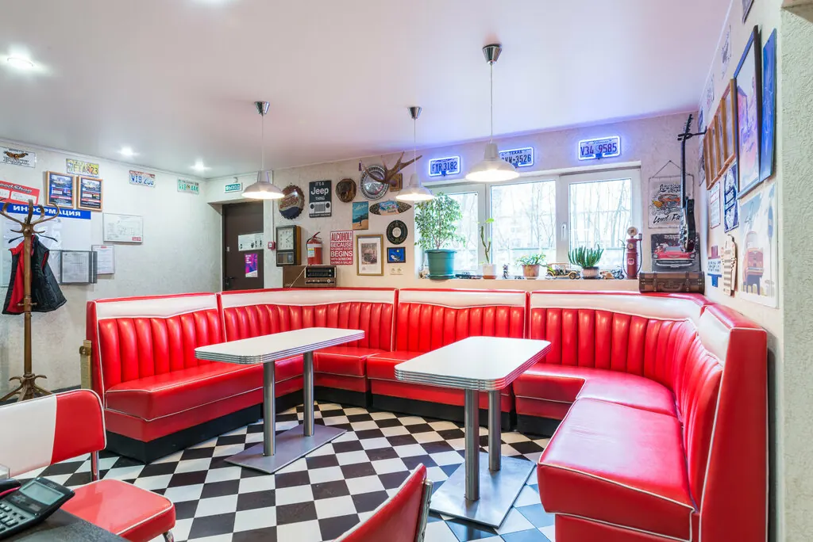
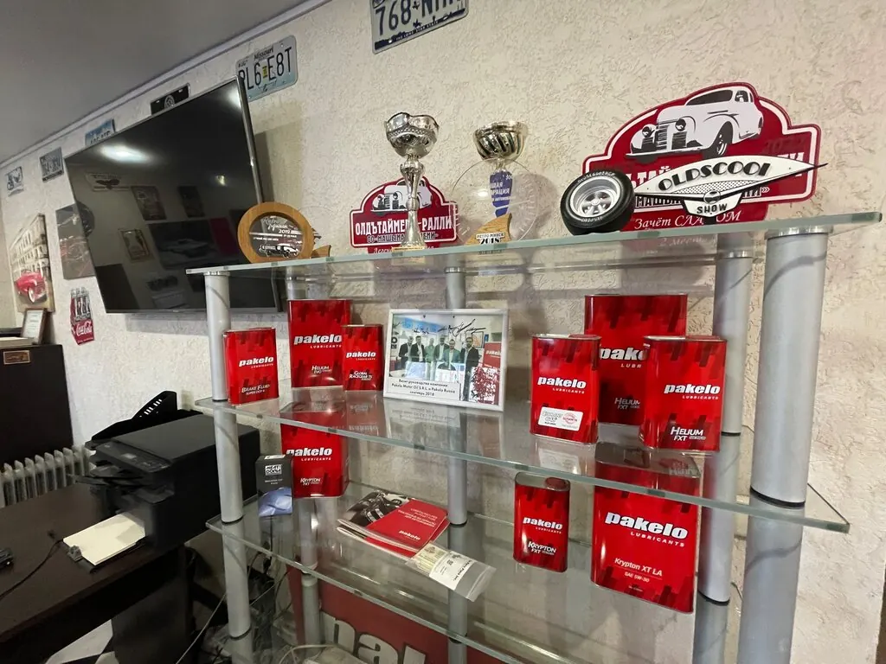
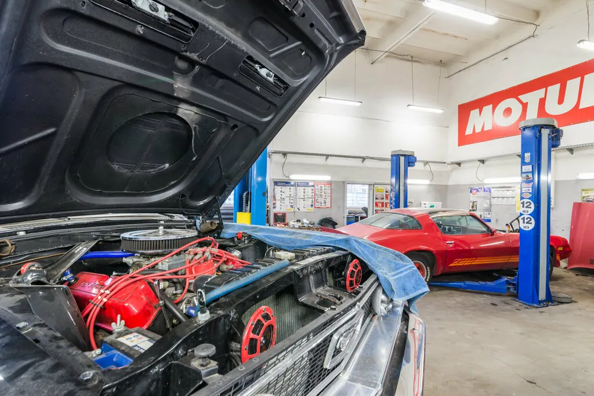
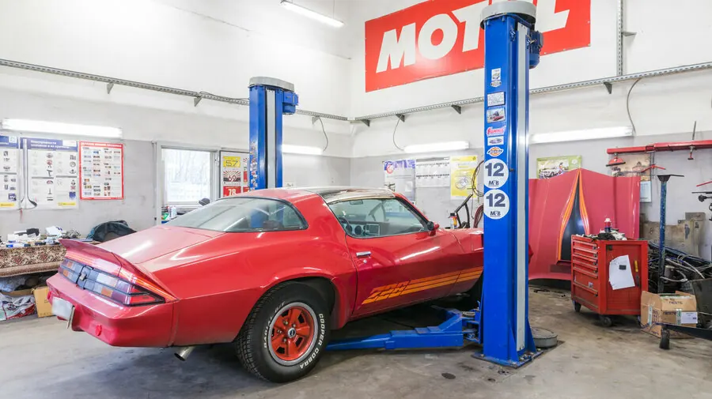
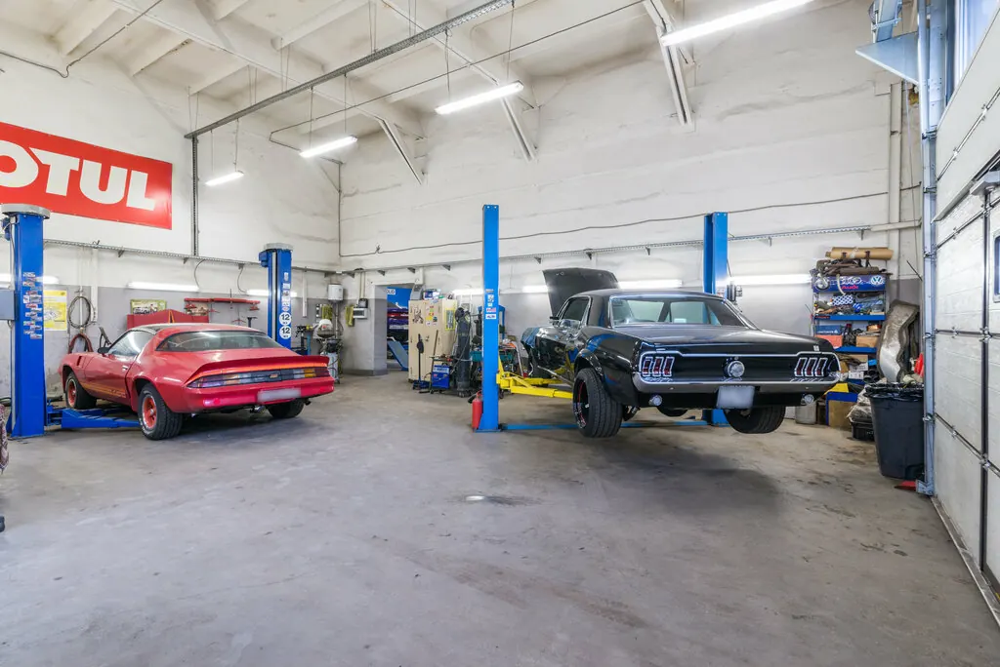
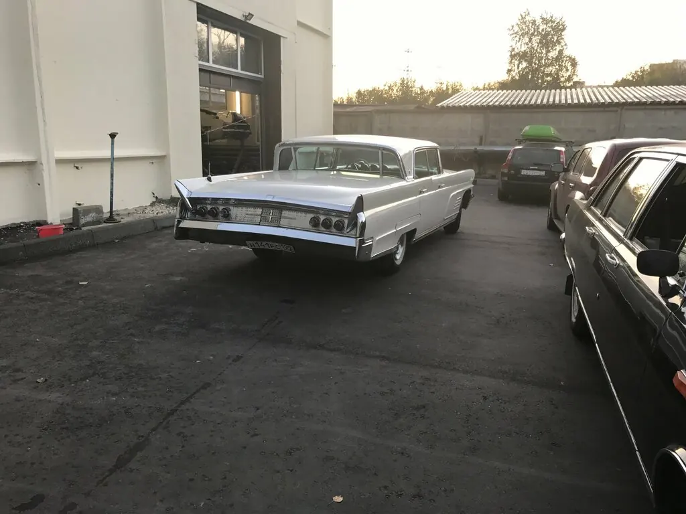

★★★★★
Невероятный автосервис с большой буквы, а авто, которые стоят у них на парковке, — как будто музейные экспонаты. Одно удовольствие ездить к ним, всем советую.
Оганес Оганесянмай 2026
Узкая студия по американской классике и маслкарам: реставрация, кузовной ремонт, покраска и детейлинг. С уважением к оригиналу — каждой детали.

Iron Duke — узкие специалисты по американской классике и маслкарам в Москве. Покрасочная камера, опыт и внимание к деталям. Рейтинг 4.9 на Яндекс.Картах по 174 отзывам — и атмосфера, в которую возвращаются.
Работаем с возрастными и редкими авто, которые отказываются брать в обычных сервисах.
Покрасочная камера и подбор цвета под оригинал — кузов и покраска без компромиссов.
Не навязываем лишнего, называем стоимость заранее, делаем в оговорённые сроки.
Лаунж в стиле ретро-Америки и музей классики во дворе — ожидание превращается в экскурсию.



Каждый проект проходит один и тот же маршрут: сначала понять автомобиль, затем вернуть ему форму, цвет и блеск — так, как задумал завод.
Диагностика состояния кузова, узлов и электрики. Честная оценка и план работ.
Восстановление геометрии и металла, ремонт повреждений, подготовка под покраску.
Подбор цвета под оригинал и окрас в собственной покрасочной камере.
Финишная мойка, чистка, доводка деталей — автомобиль возвращается как новый.
Помимо реставрации и кузовных работ выполняем полное обслуживание, мойку и детейлинг. Точную смету по вашему проекту назовём по телефону.
Реставрация, кузовной ремонт и покраска классики рассчитываются индивидуально по состоянию автомобиля.
Узнать стоимость по вашему автоМаслкары, ретро и американская классика из нашей мастерской — и атмосфера, ради которой к нам заезжают как в музей.




Невероятный автосервис с большой буквы, а авто, которые стоят у них на парковке, — как будто музейные экспонаты. Одно удовольствие ездить к ним, всем советую.
Долго искала в Москве квалифицированных мастеров, готовых работать с возрастной машиной. Здесь как раз любят возрастные авто — основная специализация — восстановление ретро. Цены приемлемые, работой по восстановлению окраски кузова осталась довольна.
Отдавал авто на развал-схождение, сделали всё быстро и качественно. Владельцы заботятся не только о ремонте, но и об эстетике места: рядом много раритетных авто, во время ожидания можно побывать на мини-экскурсии.
Обслуживаю у ребят свой Corvette C5, очень доволен. И запчасти привезли, и все работы сделали как надо. Лишнего ничего не навязывают, всё максимально прозрачно.
Сервис, где делают ремонт в оговорённые сроки, не навязывают лишние услуги, цены умеренные по сравнению с другими мастерскими. Понравилось отношение к клиенту, после ремонта ещё и моют машину.
Самая лучшая мастерская! Сюда можно ходить как в музей, за атмосферой. Дух классического авто, колоритная старинная заправка, клиентская в стиле ретро-Америки: красные кожаные диванчики, как в дайнере, плакаты, номера.